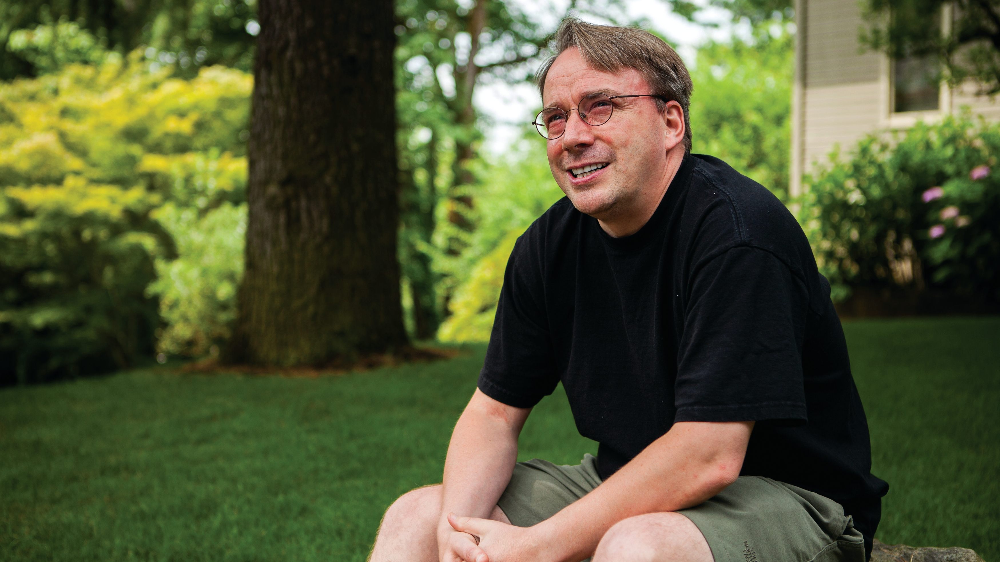

Linus Torvalds
The man,who created LINUX OS

Linus Torvalds thinking about something
Early years
Torvalds was born in Helsinki, Finland, on 28 December 1969. He is the son of journalists Anna and Nils Torvalds, the grandson of statistician Leo Törnqvist and of poet Ole Torvalds and the great-grandson of journalist and soldier Toivo Karanko. His parents were campus radicals at the University of Helsinki in the 1960s. His family belongs to the Swedish-speaking minority in Finland. Torvalds was named after Linus Pauling, the Nobel Prize-winning American chemist, although in the book Rebel Code: Linux and the Open Source Revolution, Torvalds is quoted as saying, "I think I was named equally for Linus the Peanuts cartoon character", noting that this makes him half "Nobel Prize-winning chemist" and half "blanket-carrying cartoon character".
Torvalds attended the University of Helsinki between 1988 and 1996, graduating with a master's degree in computer science from the NODES research group. His academic career was interrupted after his first year of study when he joined the Finnish Navy Nyland Brigade in the summer of 1989, selecting the 11-month officer training program to fulfill the mandatory military service of Finland. He gained the rank of second lieutenant, with the role of an artillery observer. Torvalds bought computer science professor Andrew Tanenbaum's book Operating Systems: Design and Implementation, in which Tanenbaum describes MINIX, an educational stripped-down version of Unix. In 1990, he resumed his university studies, and was exposed to Unix for the first time, in the form of a DEC MicroVAX running ULTRIX. His MSc thesis was titled Linux: A Portable Operating System.
His interest in computers began with a Commodore VIC-20, at the age of 11 in 1981, initially programming in BASIC, but later by directly accessing the 6502 CPU in machine code. He did not make use of assembly language. After the VIC-20 he purchased a Sinclair QL, which he modified extensively, especially its operating system. "Because it was so hard to get software for it in Finland, Linus wrote his own assembler and editor (in addition to Pac-Man graphics libraries)" for the QL, as well as a few games. He wrote a Pac-Man clone named Cool Man. On 5 January 1991 he purchased an Intel 80386-based clone of IBM PC before receiving his MINIX copy, which in turn enabled him to begin work on Linux.
Linux
The first prototypes of Linux were publicly released later in 1991. Version 1.0 was released on 14 March 1994.
Torvalds first encountered the GNU Project in 1991, after another Swedish-speaking computer science student, Lars Wirzenius, took him to the University of Technology to listen to free software guru Richard Stallman's speech. Torvalds used Stallman's GNU General Public License version 2 (GPLv2) for his Linux kernel.
After a visit to Transmeta in late 1996, Torvalds accepted a position at the company in California, where he would work from February 1997 until June 2003. He then moved to the Open Source Development Labs, which has since merged with the Free Standards Group to become the Linux Foundation, under whose auspices he continues to work. In June 2004, Torvalds and his family moved to Dunthorpe, Oregon, to be closer to the OSDL's Beaverton, Oregon-based headquarters.
From 1997 to 1999, he was involved in 86open helping to choose the standard binary format for Linux and Unix. In 1999, he was named by the MIT Technology Review TR100 as one of the world's top 100 innovators under age 35.
In 1999, Red Hat and VA Linux, both leading developers of Linux-based software, presented Torvalds with stock options in gratitude for his creation. That same year both companies went public and Torvalds's share value temporarily shot up to roughly US$20 million.
His personal mascot is a penguin nicknamed Tux, which has been widely adopted by the Linux community as the mascot of the Linux kernel.
Although Torvalds believes "open source is the only right way to do software", he also has said that he uses the "best tool for the job", even if that includes proprietary software. He was criticized for his use and alleged advocacy of the proprietary BitKeeper software for version control in the Linux kernel. Torvalds subsequently wrote a free-software replacement for BitKeeper called Git.
In 2008, Torvalds stated that he used the Fedora distribution of Linux because it had fairly good support for the PowerPC processor architecture, which he had favored at the time. His usage of Fedora was confirmed in a later 2012 interview. He has also posted updates about his choice of desktop environment, often in response to perceived feature regressions.
Currently, the Linux Foundation sponsors Torvalds so he can work full-time on improving Linux.
Linus Torvalds is known for disagreeing with other developers on the Linux kernel mailing list. Calling himself a "really unpleasant person", he later explained "I'd like to be a nice person and curse less and encourage people to grow rather than telling them they are idiots. I'm sorry – I tried, it's just not in me." His attitude, which Torvalds considers necessary for making his point clear, has drawn criticism from Intel programmer Sage Sharp and systemd developer Lennart Poettering, among others.
On Sunday, 16 September 2018 the Linux Kernel Code of Conflict was suddenly replaced by a new Code of Conduct based on the Contributor Covenant. Shortly thereafter, in the release notes for Linux 4.19-rc4, Linus apologized for his behavior, calling the personal attacks of the past "unprofessional and uncalled for" and announced a period of "time off" to "get some assistance on how to understand people's emotions and respond appropriately". It soon transpired that these events followed The New Yorker approaching Linus with a series of questions critical of his conduct. Following the release of Linux 4.19 on 22 October 2018, Linus went back to maintaining the kernel.
Wikipedia entry